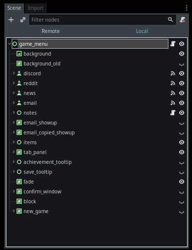
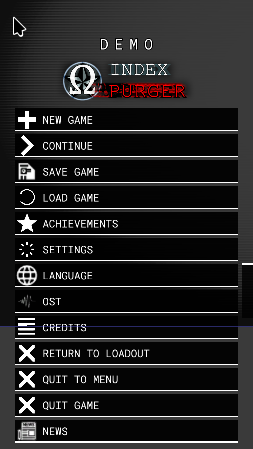
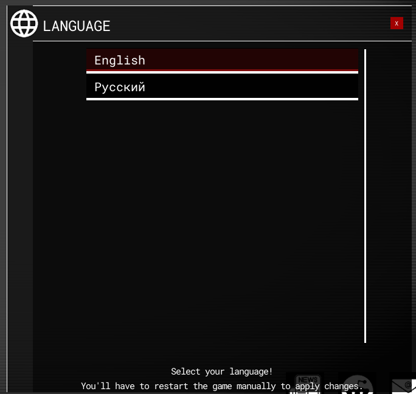

Module: game_menu
Documentation last edited: November 2, 2025 at 8:59 UTC
Description

Как и любая другая страница документации, эта начнётся с истории... Итак... В этой игре долгое время не было игрового меню... Честно говоря, я не так много работал с UI, и создавать его было пугающе. Так или иначе, я решил встретиться со страхом лицом к лицу и сделать это игровое меню. Я не помню, была ли это моя первая работа с UI, но если вы загляните в исходный код и нахуй скажете, что это моя первая попытка в UI... Это беспорядок. Это ужасно. Я ненавижу это. Я хочу переписать это. По какой-то причине я всё ещё этого не сделал. Может быть, потому что мне всё ещё плевать на игровое меню? О, да, конечно... Я могу хныкать здесь сколько угодно, но так или иначе я пишу эту страницу, чтобы она была чем-то полезной для тебя, дорогой читатель. В основном эта страница о том, как выжить в том ужасном беспорядке, который я называю "игровое меню". Выглядит круто снаружи, но не смей заглядывать внутрь...
Любые будущие упоминания "скрипта" относятся к
"res://modules/game_menu/src/ui/main_control.gd"
Общая реализация

Не повторяйте дома
Эта реализация игрового меню использует знаменитый паттерн разработки UI, также известный как "Clusterfuck of nodes". Просто узлы. Узлы. Узлы... Слои за слоями...
"res://modules/game_menu/src/ui/main_control.gd"
- это просто куча функций, которые вызываются сигналами, подключёнными в редакторе при редактировании сцены
"res://modules/game_menu/assets/ui_scene/game_menu.tscn"
. Это буквально просто "clusterfuck" узлов. Если ты знаешь, как работать с узлами, производными от
Control
, и с UI Godot в целом, ты уже можешь что-то сделать с этим игровым меню. Однако... Возможно, всё равно стоит кое-что указать, просто для лёгкости будущего редактирования.
Мелкие узлы
Есть куча "мелких" узлов, которые заслуживают своего собственного раздела здесь. Они называются "мелкими" из-за их очень простой функциональности, типа, там нет ничего сложного.

Следующие узлы я рассматриваю как "мелкие", "простые". Да. Именно вот так. У тебя может быть своё собственное мнение относительно этого. Почему бы тебе не иметь другое мнение о мелочах в любом случае?
Узлы
"background"
- Простой TextureRect для фона главного меню. Это просто виньетка с эффектом "деградации" видео.
"background_old"
- Более старая реализация фона. Из-за введения "Gamma Correction" я решил "временно" заменить его на
"background"
, и, как ты можешь понять, это один из тех случаев, когда временное решение оказалось постоянным.
"discord"
- Кнопка, открывающая пригласительную ссылку Discord для присоединения к серверу Discord "Index Project".
"reddit"
- Кнопка, открывающая страницу Reddit, которую Bender сделал для лулзов.
"news"
- Кнопка, открывающая страницу новостей патчей в игровом меню.
"email"
- Кнопка, копирующая email Index Project в буфер обмена.
"notes"
- Заметки самого Bender, да, они опциональны и могут быть включены в настройках игрового меню. Имей в виду, что "notes UI" сделано только для этого игрового меню.
"email_showup"
- Панель показа, которая появляется, когда курсор мыши наводится на кнопку
"email"
, показывает email Index Project.
"email_copied_showup"
- Панель показа, которая появляется, когда нажимается кнопка
"email"
, она говорит
"Скопировано!"
"achievement_tooltip"
и
"save_tooltip"
- Это просто всплывающие подсказки для соответствующих меню.
"fade"
- Простой
ColorRect
для затемнения меню in/out.
"confirm_window"
- Простое окно подтверждения, которое ты можешь вызвать, используя метод
show_confirm_window
.
"block"
- Простой узел
ColorRect
с полностью прозрачным цветом. Он блокирует любые вводы мыши. Он используется при затемнении игрового меню, чтобы предотвратить использование кнопок. Если оно затемняется до чёрного, это делает невозможным нажатие любых кнопок.
"items"
Это не совсем items, но... кнопки... Смотри, я тоже тут запутался, ладно?

Да, точно кнопки. Итак, здесь нет специальной магической логики относительно этих кнопок, ты просто подключаешь сигнал к скрипту
"main_control"
, а затем делаешь всё, что захочешь. Да. Ты просто добавляешь ещё одну функцию в эту ебаную кучу. Да. Абсолютно.
"tab_panel"
"tab_panel" - это универсальное решение. Это уже должно звучать довольно дерьмово для тебя. Так или иначе, "tab_panel" служит способом показать какой-либо контент в окне. На данный момент он используется для следующих "панелей":
- Настройки
- Титры
- Достижения
- Загрузка сохранений игры
- Плеер OST
- Выбор языков
- Новости патчей
Каждая из них может потребовать своего собственного раздела для лучшего описания их общей реализации.
Панель: Настройки

Это самый большая ебаная куча во всём этом беспорядке. Это причина, по которой скрипт
"main_control"
ТАКОЙ огромный. Настройки. Я люблю их, они дают возможность не мучиться и запускать игру на картошке. Это сладкая опция. Их реализация сосёт, и тебе придётся с этим иметь дело. В этом разделе стоит упомянуть, что:
- Вся эта хрень так же просто использует подключение сигналов к
"main_control"
, делая всю катастрофу ещё хуже, но эй, я надеюсь, ты любишь итальянскую еду.
- Игнорируй строку выше, оказывается, здесь это не используется, и я оставлю строку выше просто потому, что люблю отсылки к итальянской еде.
- Эта штука всё равно превращает код
"main_control"
в беспорядок, но она заставляет тебя чувствовать боль по-другому, более sophisticated способом.
Единственная причина, по которой ты *будешь так заинтересован* в этом разделе, это если ты захочешь добавить свою собственную настройку. Во-первых, подумай: Ты реально хочешь добавить настройку? Реально? Типа, тех настроек, которые уже есть в этой игре, разве этого *не достаточно*? Ты уверен?
Ты уверен дважды?
Умоляю тебя, это не хорошая идея добавлять настройку в эту игру. Пожалуйста. Не надо. Это тебя не остановило? Что ты за человек...
Как добавить свою собственную настройку в эту ебаную кучу
Найди узел с выбором значения опции, который подходит твоим нуждам. Если такой существует - это хорошо, ты можешь практически продолжать копипастить это дерьмо, который я уже написал. Если нет - это теперь твоя проблема, ты напишешь остальное полностью самостоятельно, сожалея о своих выборах.
Затем ты просто дублируешь узел, переименовываешь некоторые вещи в нём и т.д. После этого зайди в
"main_control"
и сделай Ctrl + F, найди исходный код того, что ты дублировал прежде, используй его имя как ключевое слово, чтобы найти дерьмовый исходный код, который я написал.


Начиная с этого момента, ты просто копипастишь код, меняешь некоторые имена на свои значения и та-да, у тебя есть твоя собственная опция. Пожалуйста, будь внимателен, чтобы изменить имя функции в
options.connect("item_selected", self, "fps_counter_item_selected")
на имя твоей собственной функции. Иначе это может работать некорректно.
Методы
get_game_option_text
и
get_graphics_option_text
полезны для получения текстового значения выбранных настроек в соответствующей панели настроек. Кроме того, тебе лучше посмотреть на исходный код других настроек, просто чтобы увидеть, что они сделали, случаи всяко индивидуальны. Я бы крайне рекомендовал хранить значения твоих настроек в
Values
просто как string значения, с ними проще всего работать.
Панель: Настройки - Графика

Настройки графики влияют на визуальные эффекты, которые затрагивают GPU и *могут* затрагивать так же процессор. Некоторые из вещей, которые делают эти настройки, не являются только "графическими", я бы сказал, но поскольку многие игроки предпочли использовать только меню графики - оно теперь делает больше, чем для чего было сделано . Звучит как классическая история, старее любого, читающего эту штуку.
Список настроек графики
"Пресет"
- Меняет пресет для изменения набора настроек на заданную группу качества. Влияет на значения
"bloom_enabled", "motion_blur", "anti_aliasing_quality", "fxaa_enabled", "sun_shadow_quality", "sun_shadow_resolution", "shadow_filter_quality", "light_shadow_quality", "depth_quality", "particle_quality", "overall_detailing", "material_quality", "post_processing_quality", "character_quality", "geometry_quality", "props_amount", "water_quality", "viewmodel_hands_quality", "decal_quality", "lighting_quality", "auto_exposure", "physics_quality", "debris_amount", "NPC_amount"
.
"Разрешение"
- Меняет разрешение игры. Влияет на значение
"window_resolution"
.
"Полноэкранный режим"
- Меняет режим полноэкранного режима. Забавный факт: Ты также можешь использовать Alt + Enter для этого. Это не, типа, "реальный" полноэкранный режим, больше похоже на так называемый "полноэкранный режим в окне". Влияет на значение
"window_fullscreen"
.
"Вертикальная синхронизация"
- Вертикальная синхронизация, это говорит само за себя. Влияет на значение
"vsync_enabled"
.
"Дисплей"
- Выбирает, какой дисплей использовать для этой игры. Даже если это видимо, это предполагается полезным для многодисплейных сетапчиков. Влияет на значение
"display"
.
"Поле зрения"
- Регулирует поле зрения игрока. Регулирует только FOV камеры, вьюмодели остаются нетронутыми, потому что я не собираюсь переделывать анимации, чтобы убедиться, что они не выглядят странно на высоких FOV. Влияет на значение
"FOV"
.
"Ограничение FPS"
- Значение ограничителя FPS. Максимум кадров, которые могут быть отрендерены в секунду. Влияет на значение
"max_fps"
.
"Счётчик FPS"
- Показывает простой счётчик FPS вверху справа. Влияет на значение
"display_debug_fps"
.
"Отладочная информация"
- Отладочная информация относительно производительности... Смотри, я не уверен, зачем игрокам это нужно, но это МОЯ игра, и это конечно было полезно для меня. Влияет на значение
"display_debug_info"
.
"Свечение"
- Включает/выключает пост-обработочный эффект bloom. Влияет на значение
"bloom_enabled"
.
"Сглаживание"
- Меняет качество сглаживания или отключает его. Влияет на значение
"anti_aliasing_quality"
.
"Быстрое приближённое сглаживание"
- Быстрое приближённое сглаживание. Превращает твою игру в размытое месиво в попытке сделать сглаживание. Намного быстрее, чем MSAA, though, так что имеет смысл иметь это в настройках. Включение этой опции не означает, что это сделает твою игру как бы лучше. Серьёзно. Просто размытое месиво. Прославленное размытое месиво. Влияет на значение
"fxaa_enabled"
.
"Цветокоррекция"
- Эффект цветокоррекции LUT. Меняет цвета. Ты знаешь, кинематографическим образом. Особенно когда это настроено правильно... Так или иначе, влияет на значение
"color_grading"
.
"Гамма"
- Меняет гамму. Это как... яркость... с дополнительными ступенями... Чувак, разве ты не можешь просто использовать чёртову настройку, чтобы увидеть это самому? Это просто влияет на
"gamma_value"
, вот и всё, что тебе нужно знать.
"Яркость"
- Меняет яркость всего вида игры. Влияет на значение
"gamma_brightness"
.
"Контрастность"
- Меняет контрастность всего вида игры. Влияет на значение
"gamma_contrast"
.
"Насыщенность"
- Меняет насыщенность всего вида игры. Влияет на значение
"gamma_saturation"
.
"Резкость"
- Меняет резкость изображения всего вида игры. Влияет на значение
"gamma_sharpen"
.
"Качество текстур - Локации"
- Меняет качество текстур всех локаций. Влияет на значение
"location_texture_quality"
.
"Качество текстур - Персонажи"
- Меняет качество текстур всех персонажей. Влияет на значение
"character_texture_quality"
.
"Качество текстур - Вьюмодели"
- Меняет качество текстур всех вьюмоделей. Влияет на значение
"viewmodel_texture_quality"
.
"Качество теней солнца"
- Меняет качество теней направленного света. Влияет на значение
"sun_shadow_quality"
.
"Разрешение теней солнца"
- Меняет разрешение теней направленного света. Влияет на значение
"sun_shadow_resolution"
.
"Качество фильтра теней"
- Меняет качество фильтра теней для всех теневых карт. Влияет на значение
"shadow_filter_quality"
.
"Качество теней света"
- Меняет качество теней всех теневых карт. Эта, however, работает странно. Влияет на значение
"light_shadow_quality"
.
"Качество глубины"
- ПРЕВРАТИ СВОЮ ИГРУ В CRUELTY SQUAD. ПРОРВИ ДЫРУ В КАЧЕСТВЕ ГЛУБИНЫ. НАХУЙ КАЧЕСТВО ГЛУБИНЫ. Влияет на значение
"depth_quality"
.
"Качество геометрии"
- Влияет на расстояние появления LOD вариантов моделей. Влияет на настройку
"geometry_quality"
.
"Препасс глубины"
- Включает/выключает препасс глубины... Ну, я не совсем уверен, нужна ли эта даже как настройка, но пусть будет здесь. Влияет на значение
"depth_prepass"
.
"Общая детализация"
- Эта. Эта не просто настройка. Это целая нахуй замена того беспорядка, который у меня был в настройках игры. Целая чёртова ебаная куча настроек для изменения здесь. Все они *по сути* связаны с расточительными настройками, которые могут severely навредить производительности CPU/GPU, в зависимости от твоего железа. Влияет на настройку
"overall_detailing"
, которая влияет на значения
"human_shooting_light", "human_footsteps", "human_battle_phrases", "human_smooth_shoot_sound", "left_hand_animation", "in_sight_animation", "viewmodel_close_surface_check", "bullet_trails", "bullet_trail_light", "env_reverb", "soundscape_random_sounds", "bullet_process_water", "bullet_process_glass", "bullet_shoot_event", "player_camera_walk_anim", "player_camera_suppression_anim", "player_camera_explosion_anim", "player_low_health_anim", "player_camera_damage_anim", "viewmodel_casings", "viewmodel_fire_light"
.
"Качество частиц"
- Качество частиц, обычно являющееся ебанутой причиной overdraw на GPU, что ведёт к ещё более худшей производительности. О да, я знаю, я знаю о частицах, которые хреновы в производительности, и это исправляешь легко, удаляя их полностью. Влияет на значение
"particle_quality"
.
"Качество материалов"
- Настройка, которая переёбывает материалы хорошенько. Они же были PBR, верно? Со всем прекрасным дерьмецом? Так вот, это, по сути, снимает PBR и превращает их в материалы только с диффузом. Просто нахуй прекрасно. Это сокращает около 30-40% операций OpenGL. Спасает твой GPU. Влияет на значение
"material_quality"
.
"Качество пост-обработки"
- Снимает пост-обработочные эффекты, используя их вручную-написанную низкокачественную дерьмовую версию. Сохраняет некоторую обработку шейдеров, но для какой причины? Разве твоему iGPU не нравится чтение уже существующего мипмапа с размытыми вариациями экрана? О, хотя, да, не нравится. Влияет на значение
"post_processing_quality"
.
"Качество персонажей"
- Влияет на появление LOD версии
HumanModel
, если таковая существует для модели. На низком показывает LOD вариацию всё время. Влияет на значение
"character_quality"
.
"Количество пропсов"
- Срезает всё красивое дерьмецо с локаций в виде любых локационных мешей (
LocationProp, LocationBlockoutMesh, LocationMeshCombiner
), чтобы твоё железо работало быстрее. Поведение таких мешей вручую настроено. Это не только о визуальных штуках, это так помогает срезать физику тоже. Это жестоко?
Да.
Это работает?
Ох ещё как да.
Влияет на значение
"props_amount"
.
"Качество воды"
- Меняет качество шейдера воды. Влияет на значение
"water_quality"
.
"Качество рук вьюмодели"
- Меняет качество рук вьюмодели, если таковые существуют для текущего набора рук вьюмодели. Влияет на значение
"viewmodel_hands_quality"
.
"Качество декалей"
- Меняет качество вновь создаваемых декалей (кровь, попадания пуль и т.д.). На высоком использует спроецированные декали (что может быть дорого), на среднем создаёт простой квад (быстро, неточно), на низком не создаёт ничего (очень быстро и блять разочаровывающе). Влияет на значение
"decal_quality"
.
"Качество освещения"
- Меняет качество освещения. Обычно влияет на количество источников света, их дистанцию рендеринга и т.д. Влияет на значение
"lighting_quality"
.
"Качество физики"
- Меняет качество физики. Это не это меняет что-то сильно. В основном это используется, чтобы сделать обнаружение поверхностей статических тел (что требует отдельного набора узлов
StaticBody
) менее точным (заменяя их просто одним узлом generic-типа). Влияет на значение
"physics_quality"
.
"Количество обломков"
- Меняет общее количество обломков. Обломки типо влияют, когда дело доходит до физики, так что их количество дано для контроля. Возможно выйти за лимит и зажарить свой ПК, если ты *реально* хочешь. Влияет на значение
"debris_amount"
.
"Количество NPC"
- Контролирует количество NPC на локации. Каждый спавн NPC вручную настроен. На "низком" это просто отключает спавн NPC спавнов, которые должны спавниться только на настройках "высоко". Помогает сильно оптимизировать использование CPU, потому что NPC - это неоптимизированные куски дерьма, которые я люблю использовать в огромных количествах вне зависимости от этого. Влияет на значение
"NPC_amount"
.
Панель: Настройки - Игра

Настройки игры ранее имели огромную кучу игровых настроек для контроля интенсивности использования CPU/GPU. Теперь многие из этих настроек были перемещены в настройку
"Общая детализация"
, чтобы не захламлять пространство там, оставаясь более доступными, особенно учитывая тот факт, что многие из этих настроек визуальные/висцеральные по своей природе (связанные с анимацией, сглаживанием и т.д.).
"Игра"
- Бесполезная настройка, которая была добавлена как шутка от Elenakrittik. Я имею в виду. Ты можешь отключить *всё*, чтобы эта игра работала на твоей картошке. Это похоже на отключение игры для себя.
Веселье не включено.
"Мгновенное использование"
- Мгновенное использование. Да да да. Именно. Хорошо, если взять это немного серьёзнее... Эта настройка работает вместе с анимациями левой руки. Если есть анимации левой руки, используемые объекты не используются мгновенно, а после таймера 0.2 секунды, ожидая, пока анимация дойдёт до состояния, когда скрытие оружия не будет выглядеть плохо. Это может сделать игру чуть менее отзывчивой и стать причиной для кого-то настроить её на отключение. О да, иногда я могу думать о других, удивительно. Влияет на значение
"instant_usage"
.
"Заметки в игровом меню"
- Заметки Bender, но в игровом меню. Отключено по умолчанию, потому что я не позволю ему завоевать мою собственную игру :) Влияет на значение
"game_menu_note"
.
"Заметки загрузки"
- Заметки Bender во время экрана загрузки локации. Включено по умолчанию, потому что заметки на экране загрузки - это святое. Влияет на значение
"loading_note"
.
"Рэгдолл - Время до исчезновения"
- Регулирует время удаления рэгдоллов. Влияет на значение
"ragdoll_disappear_time"
.
"Рэгдолл - Лимит количества"
- Регулирует максимальное количество сосуществующих рэгдоллов. Влияет на значение
"ragdoll_limit"
.
"Время удаления выброшенного оружия"
- Время удаления всего того выброшенного оружия мёртвых NPC. Имей в виду, оружие, выброшенное самим игроком, длится вечно. Влияет на значение
"dropped_weapon_removal_time"
.
"Рэгдолл - Сохранять уникальные"
- Вместо повторного использования рэгдолла NPC для оптимизации, эта настройка позволяет включить ультимативный режим "let the bodies hit the floor", где экземпляры рэгдоллов уникальны. Имей в виду, эта настройка не оптимизирована и... Мне плевать. Просто возьми это. Влияет на значение
"keep_ragdolls"
.
"Игрок - Ноги"
- Позволяет тебе отрезать свои собственные ноги :) Влияет на значение
"player_legs"
.
"Игрок - Покачивание камеры"
- Позволяет тебе не испытывать морскую болезнь. Влияет на значение
"player_viewbobbing"
.
"Прицел - Видимость"
- Включает/выключает видимость всего прицела. Я не уверен, как ты будешь играть в эту игру, но давай предположим, что ты любишь хардкорные шутеры, по какой-то причине. Влияет на значение
"crosshair_visible"
.
"Прицел - Маркер попадания"
- Включает/выключает маркер попадания прицела, который появляется, когда ты наносишь урон чему-либо. Влияет на
"crosshair_hit_marker"
.
"Прицел - Маркер смерти"
- Включает/выключает маркер смерти прицела, который появляется, когда ты убиваешь персонажа. Влияет на
"crosshair_death_marker"
.
"Прицел - Звук попадания"
- Включает/выключает звук попадания, который играет, когда ты наносишь урон буквально чему угодно. Он отключён по умолчанию, потому что он беспокоил меня, но кто-то другой нашёл это приятным иметь так что... Нахуй это, вот эта настройка, которая влияет на значение
"crosshair_hit_sound"
.
"Прицел - Звук смерти"
- Включает/выключает звук смерти, когда ты убиваешь кого-то, очень басовый звук попадания. Влияет на значение
"crosshair_death_sound"
.
"Прицел - Данные здоровья"
- Включает/выключает HUD информации о здоровье, который был добавлен, потому что урон не ощущался как урон, я не знаю, просто возьми это. Он включён по умолчанию, потому что это круто. Ты можешь отключить его, если чувствуешь, что это слишком для твоей накачанной задницы. Влияет на значение
"crosshair_health_data"
.
Панель: Настройки - Ввод
Панель с вводом. Я имею в виду... Да, это всё само по себе объясняет, не так ли? Просто чувствительность мыши, куча чекбоксов, добавленных для лулзов, кнопка сброса и куча кнопок.
"Чувствительность мыши"
- Ползунок, который просто меняет значение
"mouse_sensitivity"
.
"Переключаемый присед"
- Настройка, которая делает возможным нажать кнопку приседания однажды, чтобы присесть, пока ты не нажмёшь её опять. Переключает значение
"toggle_crouch"
.
"Переключаемый спринт"
- Настройка, чтобы нажать кнопку спринта однажды, чтобы спринтовать, пока ты не нажмёшь её опять. Переключает значение
"toggle_sprint"
.
"Переключаемое прицеливание"
- Нажать кнопку прицеливания once, чтобы прицеливаться, пока ты не нажмёшь её опять. Переключает значение
"toggle_aim"
.
"Инвертировать мышь по X"
- Инвертирует горизонтальный взгляд мыши. Переключает значение
"invert_mouse_x"
.
"Инвертировать мышь по Y"
- Инвертирует вертикальный взгляд мыши. Переключает значение
"invert_mouse_y"
.
"Сброс"
- Кнопка сброса, которая показывает окно подтверждения, чтобы потом вызвать метод
reset_input_accept
.
"Назначение клавиш"
- Этот интересен... Этот заслуживает целого чёртова раздела :)
Назначение клавиш

Назначения клавиш инициализируются в
initialize_settings
. Да. Где-то на строке... 1983? Так или иначе, просто ищи комментарий
# INPUT REMAPPING
, и ты будешь в норме. Да, это огромная функция. Да, я мог бы просто разделить её на smaller функции, чтобы я не fucked с твоим разумом сейчас. Да, мне плевать, и это никогда не будет отредактировано мной. Просто используй чёртов
[Ctrl + F]
, god dammit.
Если ты хочешь добавить новое назначение клавиш, ты просто редактируешь скрипт и добавляешь своё новое красивенькое назначение клавиш в словарь
inputs
. Я знаю. Очень расширяемый дизайн. Не хнычь об этом.
"console_toggle" : "Developer Console"
- ключ это имя входного действия, значение это отображаемое имя, которое ты можешь видеть в меню. Просто.
Панель: Настройки - Звук

Настройки звука. Ты знаешь, что это means.
"Сброс"
- Показывает окно подтверждения, которое потом вызывает
reset_sound_accept
"Общая громкость"
- Главный канал, общая громкость игры. Редактирует значение
"master_volume"
.
"Музыка"
- Музыкальный канал, громкость музыки. Редактирует значение
"music_volume"
.
"Музыка - Бой"
- Музыкальный канал, но для "боевой" музыки. Редактирует значение
"music_battle_volume"
.
"Окружение"
- Канал окружения, звуковые ландшафты, выстрелы и т.д. Редактирует значение
"env_volume"
.
"Голосовые линии"
- Голосовые линии и голосовые сообщения. Редактирует значение
"voiceline_volume"
.
Панель: Настройки - Язык


Да так... Была кнопка для меню языка в узле "items", но затем Bender начал жаловаться на количество этих кнопок там, так что мне пришлось переместить её в настройки. Звучит круто, верно? Тебе точно нужно было знать об этом. Я знаю, что да. Так или иначе, список этих языков заполняется автоматически проверкой списка файлов тех .json файлов в папке
"localization"
. Одна вещь, которую тебе нужно знать, это то, что
"__original_text.json"
указан как "Runglish", а
"EnglishFix.json"
указан как
"English"
в меню. Otherwise языки указаны как их оригинальные имена .json файлов.
Я ненавижу, как долго мне потребовалось, чтобы охватить все настройки :(
Достижения
Меню достижений типо просто. Инициализация происходит в
initialize_achievements_tab
, изменения вкладок обрабатываются в
achievement_on_tab_change
. Оно перечисляет все достижения, however, "секретные" достижения инициализируются только когда они разблокированы. О, да, каждый раз, когда ты нажимаешь кнопку вкладки
"Достижения"
, оно будет обновлять показ обновлённого меню. Так что... Если у тебя было это меню открытым и ты получил достижение разблокированным только after that, это меню не обновится само. Я имею в виду, да, это можно исправить. Я имею в виду, да, мне also плевать.
OST
Меню OST. Может быть немного избыточным для этой игры, учитывая тот факт, что у неё нет революционного саундтрека, который каждый хотел бы слушать вместо того, что бы играть в эту игру. Но знаешь что? Мне не важно, потому что было весело работать над этим. Оно использует кучу методов:
on_OST_position_changed, on_OST_volume_changed, on_OST_finished, OST_play, OST_pause, OST_stop, update_OST_panel, get_OST_time_text, play_OST
.
"res://modules/game_menu/assets/OST/"
содержит все саундтреки в .mp3 формате. Вся инициализация происходит в функции
update_OST_panel
. Есть одна вещь, которую нужно охватить, though...
.
├── 0_1_1_files.mp3
├── 0_1_1_files.mp3.import
├── 0_1_2_ReaadyGodySte.mp3
├── 0_1_2_ReaadyGodySte.mp3.import
├── 0_1_loading_v2.mp3
├── 0_1_loading_v2.mp3.import
├── 0_2_dead_or_alive.mp3
├── 0_2_dead_or_alive.mp3.import
├── 0_eternal_conflict.mp3
├── 0_eternal_conflict.mp3.import
├── 10_collapse.mp3
├── 10_collapse.mp3.import
├── 11_moments_to_death.mp3
├── 11_moments_to_death.mp3.import
├── 1_1_tutorial.mp3
├── 1_1_tutorial.mp3.import
├── 12_blood_loss.mp3
├── 12_blood_loss.mp3.import
├── 13_mall_nightmare.mp3
├── 13_mall_nightmare.mp3.import
├── 14_empty_halls.mp3
├── 14_empty_halls.mp3.import
├── 1_first_iteration.mp3
├── 1_first_iteration.mp3.import
├── 2_1_no_choice.mp3
├── 2_1_no_choice.mp3.import
├── 2_2_encrypted_session.mp3
├── 2_2_encrypted_session.mp3.import
├── 2_questionable_choices.mp3
├── 2_questionable_choices.mp3.import
├── 3_waiting.mp3
├── 3_waiting.mp3.import
├── 4_omega_security_presentation.mp3
├── 4_omega_security_presentation.mp3.import
├── 5_corporate_terrorism.mp3
├── 5_corporate_terrorism.mp3.import
├── 6_senseless_murder.mp3
├── 6_senseless_murder.mp3.import
├── 7_constant_alarm.mp3
├── 7_constant_alarm.mp3.import
├── 8_1_mad_mode.mp3
├── 8_1_mad_mode.mp3.import
├── 8_2_HCS-S_mode.mp3
├── 8_2_HCS-S_mode.mp3.import
├── 8_first_contact.mp3
├── 8_first_contact.mp3.import
├── 9_get_inn_arena.mp3
└── 9_get_inn_arena.mp3.import
Ты можешь заметить those странные номера в начале имён файлов. Я использую это как странный способ сортировки позиционирования в плейлисте. Я знаю, это странно, но это работает. Имей в виду, что those номера игнорируются полностью и имя файла используется для отображаемого именования в меню. Ой, подожди, почему
"1_"
идёт после
"10_"
?...
Титры
Титры. Просто простой
RichTextLabel
с кучей эффектов и всего. У него нет инициализации в коде, и единственный код, написанный для этой штуки, это просто о переключении вкладок.
Новая игра
Начать новую игру да да да. Хорошо. Это может быть не так легко объяснить, потому что эта штука типо сломана. Во-первых, если тебе интересно, как работает выбор сложности... Это достаточно просто.


Та-да, теперь ты можешь соединить точки между 2 + 2 и добавить свою собственную сложность :)
Хорошо, тебе нужно будет отредактировать некоторые другие скрипты, чтобы сделать это, но... Как уж оно есть. Это не тема этой страницы документации, так что я не буду освещать это здесь, особенно потому что я сомневаюсь, что этой игре понадобятся какие-либо другие сложности, кроме тех, которые у неё есть сейчас.
Когда ты начинаешь новую игру - тебя перенаправляют на функциональную локацию, которая
"func_new_game"
. Когда ты входишь в эту локацию, запускается скрипт логики, расположенный в
"res://locations/scenes/logic/func_main_menu.gd"
, и затем новая игра начинается basically. По сути сломанное современное решение для древней проблемы.
Я надеюсь, тебе было весело читать об этом игровом меню.
General Information
Root directories list
assets, docs, src
Nodes
GameMenu
achievement_icon
difficulty_hint
input_button
main_control
notes_switcher
Classes
None
Resources
Other Scripts
None